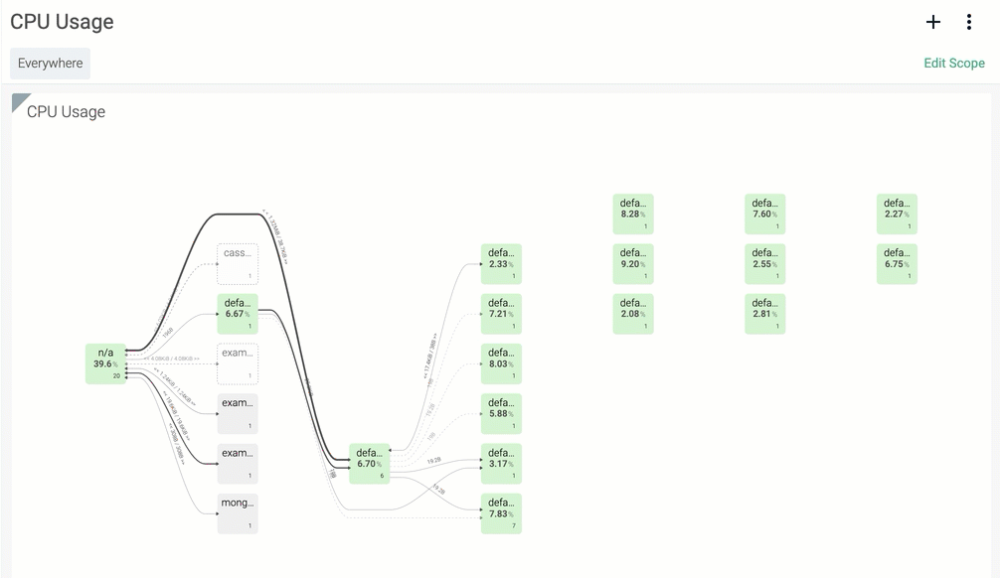
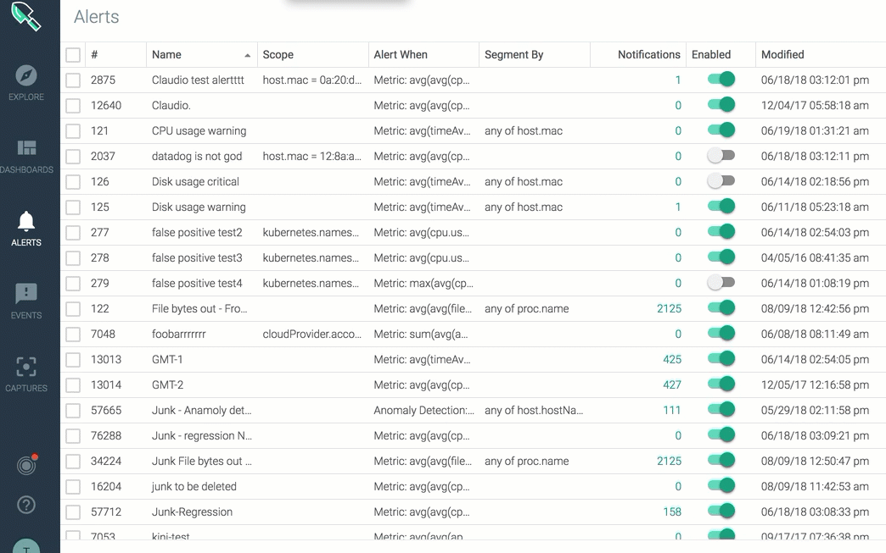
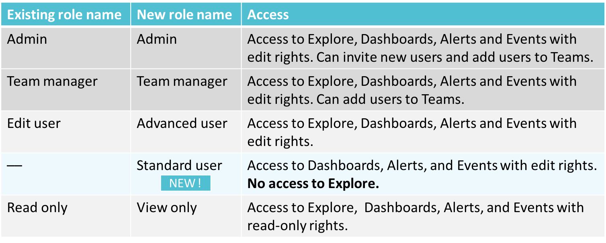
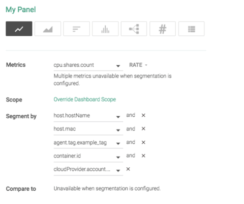
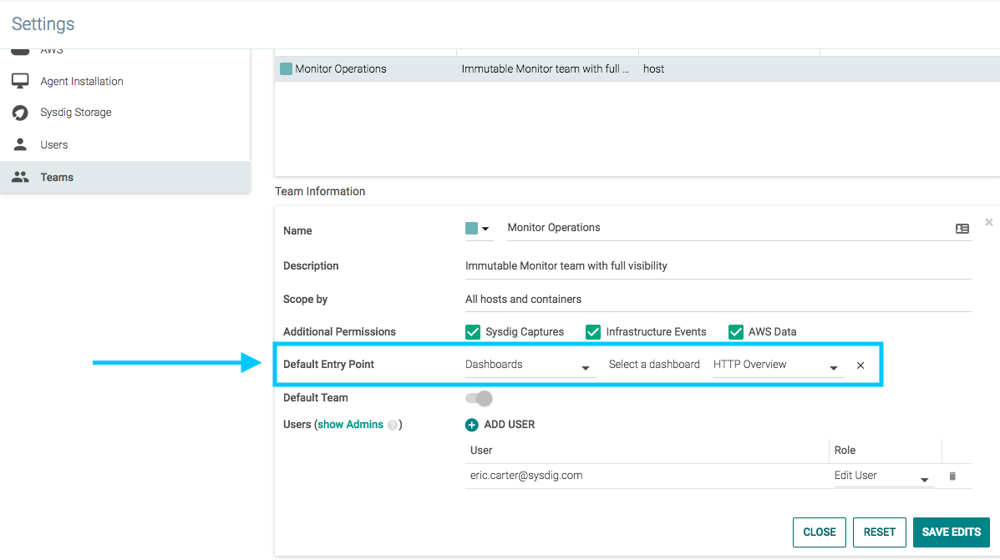
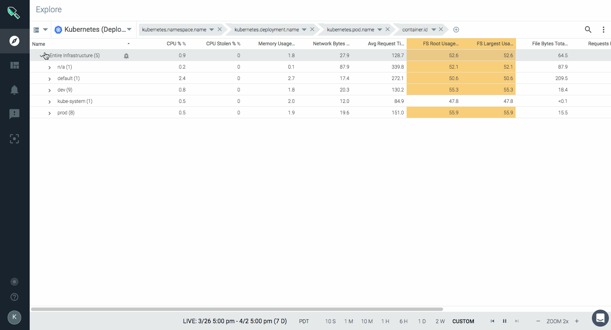
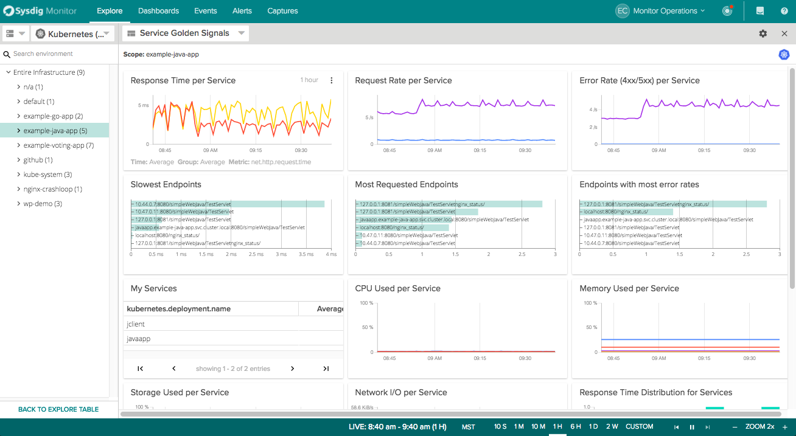
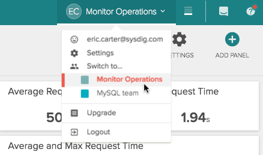

SaaS: Sysdig Monitor Release Notes
July 11, 2019
Enhanced Dashboard Menu
The Dashboard menu features a drawer-style popover that displays a list of Dashboards you own and those shared by your team. With the popover menu, you can add new Dashboards and search for existing ones. Click a Dashboard name to access the relevant Dashboard page where you can continue with the regular Dashboard settings.
 |
Customize Alert Notification Template
Sysdig Monitor alerts now provide an option to customize the messages that are sent with alert notifications in email and other channels, such as Pagerduty and Webhook.
Use the Alert Editor to input dynamic variables, such as hostname, or a hyperlink, and to add custom messages in plain text to the notifications for intended recipients. You can modify both the subject and the body of the alert notification with a hyperlink or a variable. For example, you can add an agent id or a link to a Dashboard to the message. This can help provide context for troubleshooting the errors that triggered the alert.
For more information, see Customizing Alert Notification.
 |
Prometheus Remote Scraping
Sysdig Monitor can now collect Prometheus metrics from remote endpoints with minimal configuration.
Remote endpoints (remote hosts) refer to hosts where the Sysdig agent cannot be deployed, e.g., a Kubernetes master node on managed Kubernetes services such as GKE and EKS, where user workload cannot be deployed. To enable remote scraping on such hosts, simply identify an agent to perform the scraping and declare the endpoint configurations in the agent configuration file.
The collected Prometheus metrics are reported under and associated with the agent that performed the scraping, rather than with a process. For more information, see Collecting Prometheus Metrics from Remote Hosts.
Enhancements to Kafka AppCheck
Kafka integrations can now support authentication and SSL/TLS. If authentication or SSL/TLS are enabled in Kafka, see Apache Kafka Example 5 for how to enable configuration details on the Sysdig side.
Two New Metrics for Accurate Pod Counts
Two new Kubernetes metrics, kubernetes.namespace.pod.desired.count and kubernetes.namespace.pod.available.count, have been added at the Namespace level to track desired and available pod counts.
May 02, 2019
Advanced Scope Selection
The scope editor (for dashboards, alerts, teams, etc.) has added improved granularity, intelligent scope restriction, and the ability to add custom values on-the-fly. The editor now restricts the scope of the selection for subsequent filters by rendering values that are specific to the selected label. The values that are only relevant to the previous selection are displayed. For more information, see Dashboard Scope.
|  |
Control Dashboard Scope in URL
The Dashboard URL can include scope parameters, including scope variables. Users can now share the URL with non-Sysdig Monitor users and allow them to collaborate on dashboard scope. Collaborators with a valid link can change the scope parameters without having to sign in. They can edit either on the UI or in the URL. For more information, see Share a Dashboard.
 |
Manage Notification Frequency for Alerts
Users now have the ability to specify how often they want to be reminded about an alert if the event is unresolved. Available under 'Notify' section of the alert configuration screen. See Alerts.
March 18, 2019
CRI-O Support
Sysdig on Kubernetes now provides support for CRI-O, an implementation of the Kubernetes Container Runtime Interface (CRI).
See Sysdig documentation here.
CRI-O container runtimes can be identified by the symbol beside the entry in the Explore table:
 |
Note
The latest Sysdig Agent release is required to for CRI-O support.
February 14, 2019
Containerd Support
The Sysdig agent will automatically detect containerd metadata, as well as any Docker metadata, in your environment. Note that you must have agent version 0.88.1 or higher.
See the agent install instructions for details.
Note
If you are upgrading from an earlier version of the agent, note that you must also download the latest sysdig-agent-daemonset-v2.yaml from GitHub for containerd functionality.
Improved Notification Channels Configuration
A newly redesigned notification channels page under settings has been implemented. For more information, refer to the Set Up Notification Channels documentation.
User Interface Changes
The Intercom button has been moved from the bottom right corner of the Sysdig Monitor UI to the bottom left to facilitate a better user experience, as the previous location interfered with other UI elements. It can now be found below the Help, Spotlight, and User menus.
 |
January 9, 2019 Hotfix
No New Features in this Release
Fixes
Fix to prevent multiple segments from being visible in Explore view.
Fix to correctly recognize
ANDin upper case when used in Scope editor.In a very narrow scenario, copying a specific URL when viewing the Monitor app was causing redirects. This is now fixed.
January 4, 2019
New Event Feed
A redesigned Events Feed is now available.
The new design unifies all of your infrastructure-related events, alerts, and other activity in a single view to help you quickly identify critical issues that need your attention.
See also: Events.
 |
New Topology is now GA
The new topology map functionality in Sysdig Monitor has moved from a labs feature to full general availability.
It features a redesigned layout and enhanced interaction model to provide insight into dependencies with drill-down to the container-process level.
 |
Authentication UI
Administrators can now configure single sign-on authentication methods (SAML, OpenID, Google OAuth) via the Sysdig Monitor UI.
See also: Authentication and Authorization (SaaS).
 |
November 21, 2018
Global silence alerts for scheduled downtime
Administrators can now temporarily disable alert events to mute notifications during planned downtime or maintenance. The new feature also supports sending a downtime notification to selected channels. Access the new capability via Settings > Notification Channels. See Mute Notifications During Downtime.
Dashboard Templating
New dashboard templating enables users to create and configure a fixed dashboard that enables alternating between multiple scope variables. Users can assign custom names for labels and choose to set fixed or variable label selection values.
See Dashboards.
Updated Users and Teams Settings Pages
The Users and Teams settings pages have been updated to improve performance and now feature a streamlined full-page edit layout.
October 24, 2018
Alert re-notification
You can now choose to be reminded about an alert every 30 minutes if the event is unresolved. Available under 'Notify' section of the alert configuration screen.
|  |
Dashboard scope UI update
A new edit button is displayed at the top of dashboards. Simply click to edit the dashboard scope.
Bug Fixes
Several minor enhancements to improve performance and usability.
October 9, 2018
No new features in this release.
Bug Fixes
Fixed an issue where PagerDuty hangs during setup but does successfully configure
Notification channels "name" is now a required field
Restored metric unit multipliers in alert editor
Fixed segmentation for Explore's "overview by process"
Fixed minor bugs with Slack and PagerDuty channels
August 15, 2018
Configurable metric formatting
You can now select unit scale (Kilo, Mega, Giga, Tera, Peta …) and decimal precision in Number and Time Panels. With the decimal precision of 0, you can now assign whole numbers to be reflected in your container count and host count panels.
 |
StatefulSet metrics and default dashboard
Kubernetes StatefulSet metrics are now available as part of kube-state-metrics.
A new default dashboard for StatefulSets provides visibility into 'number of pods', 'container count by StatefulSet' and 'pod desired / restarts by StatefulSet'.
 |
Performance improvements
We've enhanced the performance of scope labels, alert editor and monitor metrics.
July 19, 2018
New 'Standard User' role and RBAC changes
We've introduced a new 'Standard User' role designed for developers that includes edit access to dashboards, alerts, events but NO access to Explore. The existing 'Edit user' role has been renamed to 'Advanced user' and existing 'Read only' renamed to 'View only'. See our user documentation for more details.
|  |
Performance improvement for team scoping
When creating or editing teams, the first 30 labels and tags are displayed with the ability to search for additional options.
 |
New AWS Groupings
We've extended and changed our AWS groupings in Explore. The previous 'AWS Instances' grouping (cloudprovider.availabilityzone > cloudprovider.id) is now 'AWS Instances by Zones'. We've also added a new grouping 'AWS Instances' (cloudprovider.id) that displays any discovered AWS data source (e.g., EC2, RDS, ELB).
 |
June 27, 2018
Multi-select alerts and bulk actions
New checkboxes on the alerts page simplifies selection of multiple alerts and bulk actions.
 |
June 5, 2018
Text panels
You can now add text panels to your dashboards to provide additional information. Text panels can be used as title headers or to provide additional context that you would like to communicate. Features limited markdown support.
Kubernetes Node Ready alert
A new out-of-the-box alert is available to provide notifications when a Kubernetes node is not ready.
By default the alert is set to warning, but severity is user configurable.
 |
May 21, 2018
Multiple segments for a single metric
You can now add up to five different segments for a given metric in time-series and stacked area panels.
|  |
May 2, 2018
Default entry point
Admins can now set a default entry point for a team to simplify the onboarding process. This determines the first page users see when they start the application (e.g., a specific dashboard, settings, etc.).
|  |
Default Istio dashboards
Sysdig provides out of the box dashboards for monitoring Istio using Prometheus exporters.
 |
Test notification channels
New test function lets you pre-test your notification channels like, email, Slack, PagerDuty, etc.
 |
Icon labels
New icon labels appear on hover to clarify underlying function for users.
 |
April 20, 2018
Alert on rate of change
Introducing a new 'rate of change' math function for metrics. Now you can alert by the rate at which a metric changes vs. a static threshold. For example, a default alert: Rate of change of disk usage alerts you if your disk usage increases more than x% in a day.
 |
April 16, 2018
Support for Prometheus histogram metrics
Sysdig Monitor can now ingest a Prometheus histogram metric type and visualize them in a chart to show the distribution of specific metrics.
 |
Link to Grafana plugin
Did you know you can add Sysdig as a Grafana data source? To help you get started visualizing Sysdig-collected metrics in Grafana, we've added a Grafana Plugin link to the help menu that takes you to the setup instructions.
Revised alerting with Kubernetes metrics
Alert configuration settings for Kubernetes metrics now limit scope and segmentation based on the metric that is selected to allow for more accurate alerting. Check out our support page for more details.
Compare-to for timeseries
In your timeseries line charts you can now compare time-shifting metrics to easily spot trends and anomalies. With compare-to for timeseries you can configure and observe how one or more metrics have changed since a previous time (e.g., 1 hour ago or 2 days ago).
New metrics for CPU Core usage
We've added cpu.cores.used and cpu.cores.used.percent that align with the way Kubernetes exposes cpu usage. Now you can compare values using kube-state-metrics such as kubernetes.node.capacity.cpuCores, kubernetes.pod.resourceLimits.cpuCores in order to determine if resources are oversubscribed. These metrics are also key for capacity planning and chargeback calculations.
 |
Improved documentation for CPU metrics
Our Sysdig Monitor Metrics Dictionary features updated CPU metrics descriptions to provide more insight into each available metric.
Resizable columns
The UI now allows columns to be resized for all tables in the application including alerts, events, teams, and users.
Suggest mode
Suggest mode auto-selects only the relevant dashboards and metrics, hiding any inapplicable views. This is now the normal mode of operation. The turn on/off option is no longer available.
Redesigned login screen
We've put a new, more modern face on the Sysdig Monitor login screen.
April 3, 2018
New UI design
Our new user interface provides a more modern framework for interacting with the product. Navigation is re-oriented from a top-of-screen menu to an icon-driven left side panel, providing more space for viewing your metrics and dashboards. Click here for a quick video introduction!
|  |
March 19, 2018
'Compare to' for number panels
Metric number panels now feature a configurable 'Compare to' function to display the change in measurement since a previous time frame.
Provides insight into the increase or decrease of metrics over time.
 |
March 6, 2018
New Explore design
We've redesigned Sysdig Monitor's Explore page to give you extra screen space to view your killer dashboards and metrics.
The new vertical layout helps you see more and get to what you need faster.
 |
Golden Signals dashboards
New Service Golden Signal dashboards provide out-of-the-box metrics that developers need when launching and monitoring a service or app. Includes slowest transactions, latency, request volume, error rates, and most requested URLs.
|  |
Export table data as JSON/CSV
You can now download table data in JSON or CSV format for offline viewing and analysis.
 |
UI updates
We've simplified the dashboard panel copy function and added a duplicate panel option in menu. We've also redesigned the dropdowns in the top right header including making it easier to quickly see and select your teams.
February 26, 2018
Spotlight
Want a simple way to quickly see what matters most in your environment? Spotlight helps you quickly discover, detect, and optimize your infrastructure and services. A Spotlight health check shows you new integrations, infrastructure, app, and agent status, and more at-a-glance.
 |
February 15, 2018
Explore grouping and scoping enhancements
We’ve massively simplified grouping and scopes. Our new approach gives you better, more precise data - with less chance of invalid groupings (e.g. Kubernetes deployment > hostname). Have questions? Watch this video, read this article, or contact Customer Success and we’ll analyze your account for you!
 |
kube-state-metrics
Sysdig Monitor now collects kube-state-metrics for monitoring and alerting on the state of Kubernetes objects. New dashboards provide visibility of metrics for nodes, namespaces, services, daemonSets, jobs, replicaSets and pods. Requires update to the Sysdig agent version 0.77.0 or higher. Click here for details on enabling this feature.
 |
Public URL dashboards
Ever want to share a killer dashboard with a colleague who is not a Sysdig Monitor user? Now you can! Just pick, click, and send your URL.
 |
Team Manager role
We’ve introduced a new 'Team Manager' role that provides the privilege to add, delete, and modify team users as well as grant read or edit access.
 |
Suggest mode enabled by default
Last year we introduced suggest mode – available in 'Settings>Sysdig Labs' – as a way to boost your efficiency by showing only the views, metrics, and grouping presets applicable to your environment.
This option has proven so popular that it is now enabled by default.
Custom headers for webhooks
When using webhooks, typically used to pass authentication credentials, you can now add custom headers to pass along additional details with an outgoing request.
January 24, 2018
Rename of Admin team to Monitor Operations
As part of the broader Sysdig Platform initiative, 'Admin Team' within Sysdig Monitor is now renamed to 'Monitor Operations.'
The Monitor Operations team will continue to behave the same as the previous Admin team:
The Monitor Operations team cannot be deleted.
Monitor Operations users have full visibility to all resources.
To change settings for any team, admins must switch to the Monitor Operations team.
|  |
January 18, 2018
Support for JMX metrics from Java 9
Sysdig Monitor now supports JMX monitoring for Java 9 applications. To enable collection of Java 9 metrics, update to the latest Sysdig Agent.
For more details, review the Sysdig Agent Release Notes.
January 4, 2018
Introducing read-only users
Users can have different roles for each of the teams they belong to, either 'Read user' or 'Edit user'. A read user can only use the app in read-only mode, with no permission to create/edit/delete dashboards, alerts, etc while the edit user is allowed to make those changes. This is a per team role defined by Admin users.
Memcached default dashboard
A new default dashboard has been added to the Explore page where you can see the most important Memcached performance monitoring metrics: connections, commands, get hits/misses, evictions, etc.